1. 디지털로의 전환
- DX(Digital Transformation): 전반적인 모든 비즈니스 요소에 디지털 기술을 적용하여 전통적인 사회구조를 혁신, 변혁하는 것을 의미 (기업들의 비즈니스 전략)
- Data Literacy : 데이터를 보는것이 아니라 탐색을 통해 자신이 이해하고, 이를 다른사람과 대화와 협업을 통해 찾은 통찰을 공유하는 능력 (개별구성원에게 능력되는 능력)
example
태블로 도입전
- SAP에서 데이터를 다운로드 \(\to\) excel에서 가공 \(\to\) Powerpoint나 excel에서 시각화 하는 방식
테블로 도입 후
- SAP 데이터를 Tableau에서 바로 연결하고 실시간으로 데이터의 흐름을 추적
- Tableau Desktop에서 시각적 분석을 한뒤, Tableau Server로 공유하는 형식
변화
- 데이터를 기반으로한 의사결정이 빨라짐
- 비지니스에 대한 이해와 흐름이 이전보다 훨씬 좋아짐
데이터 시각적 분석
- 데이터 시각화를 통해 스토리텔링 및 인사이트를 찾는 분석 기법
Summary
- DT
- 기업의 당면과제 \(\to\) 산재되어 있는 데이터를 집중화시키고, 비즈니스에 적극적으로 활용할 수 있도록하여 데이터에 대한 내부 문화가 바뀌도록 유도
- DL
- 기업 구성원의 당명 과제 \(\to\) DT로 마련한 데이터를 개인들이 언제나 접근해 비즈니스 인사이트를 빠르게 발굴하는 능력
- DV
- DL을 강화 \(\to\) 데이터를 시각적으로 표현하고 찾은 인사이트를 조직 내 공유 및 협업하는 과정
2. 태블로 이해 및 설치
(1) 태블로란?
- 데이터를 분석 및 시각화하는 Business Intelligence(이하 BI) 솔루션
- 사용자에게 최소 수준의 기술만을 요구 \(\to\) 사용자가 데이터 활용 시 IT부서에 의존도를 최소화하고 그들 스스로 데이터를 이해하하도록 함
- 2021년 기준 9년 연속 Gartner가 선정한 DV & BI 분야의 리더
- 데이터 원본에 없는 필드를 직접 생성 가능 \(\to\) 엑셀과 비슷한 함수들이 많음
(2) 태블로 퍼블릭 설치
- step1. 링크로 이동
- step2. 인적사항 작성 후 파일 다운
-step3. 설치 확인
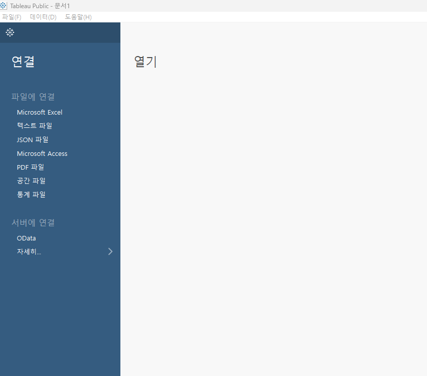
(3) 데이터 연결
- 상단에 태블로 마크를 클릭하면 워크시트가 생성
- connect data 클릭 후 확인!
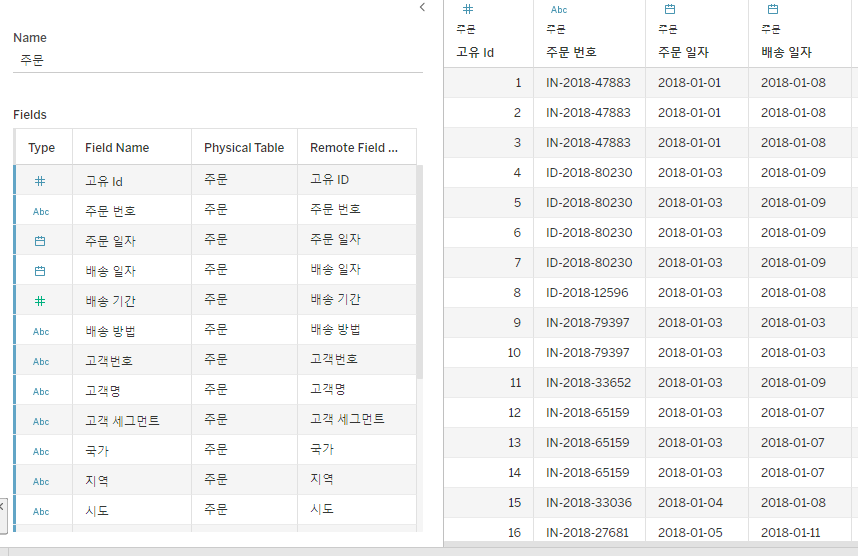
- #: 숫자
- Abc: 문자
- 달력 : 날짜데이터
example
- 시트로 이동 후 매출 측정값을 더블 클릭한 경우
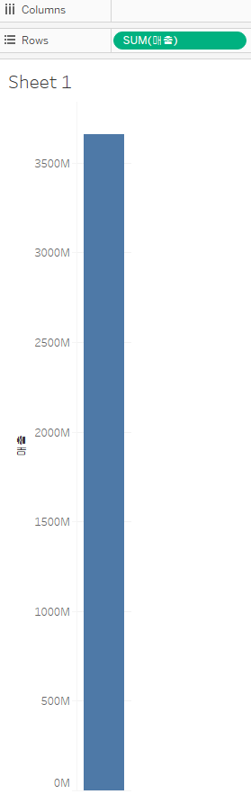
- 그 후, 고객 세그먼트를 더블 클릭!
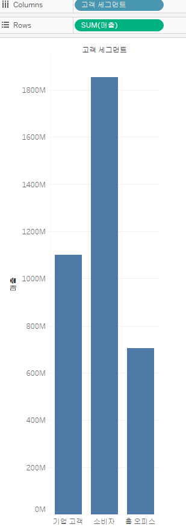
- 고객 세그먼트 컬럼을 추가하기 전에는 전체 합계를 표시해 주었지만, 추가한 이후에는 고객 분류에 맞는 합계를 제공해주었다
3. 태블로 기본 컨셉 1
(1) 측정값 : 숫자형식 (#)
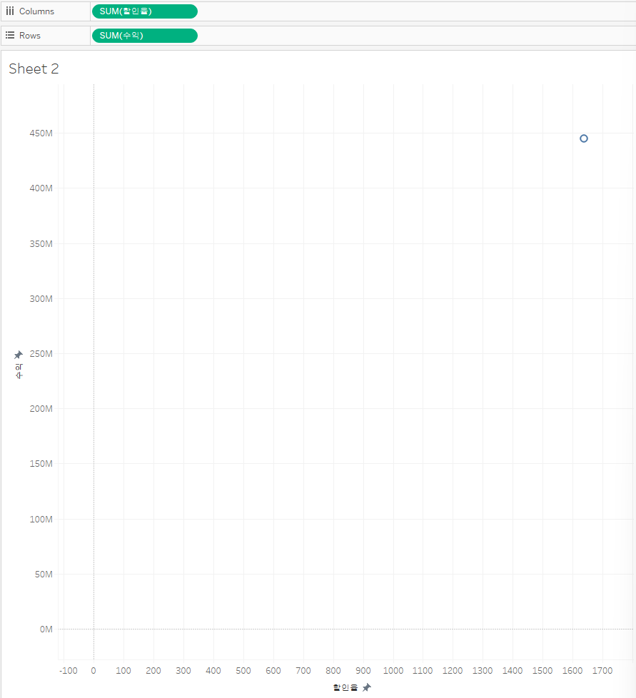
- 측정값을 컬럼에 추가했기 때문에 전에 했던 고객 세그먼트처럼 분류된 값을 보여주지 않는다.
- 근데 할인율은 합계가 아니라 평균으로 집계해야한다.
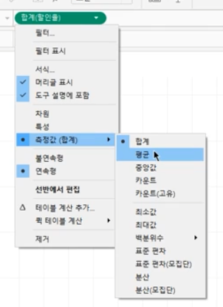
- 집계 후 결과 확인
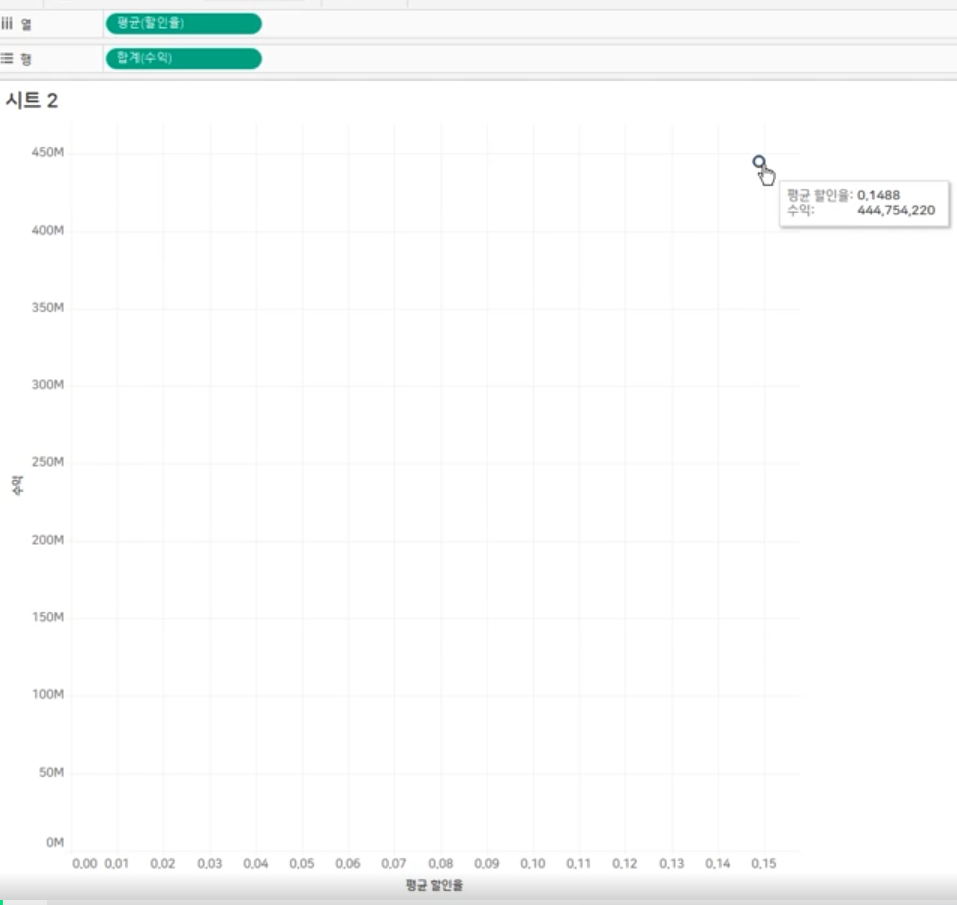
- 새로운 시트로 바꿀 경우 집계함수의 디폴트가 합계이다.
- 이 경우 해당 측정값의 기본 속성을 평균으로 바꾸어주자
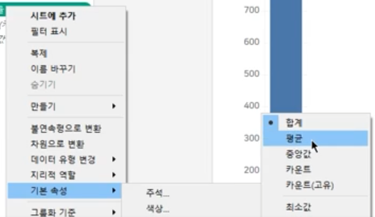
- 그 후 시트를 다시 생성하면 됨!
- 숫자 형식 변경 : 기본 속성 \(\to\) 숫자형식 \(\to\) 백분율
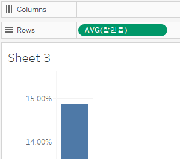
(2) 차원
- 행에 주문일자(차원), 매출(측정값), 열에 고객 세그먼트 (추가)
- 즉, 차원은 숫자로 만들어진 측정값을 나누어서 보는 개념으로 생각하자
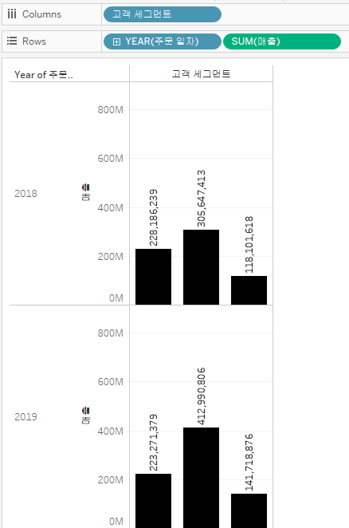
(3) bar garph
- 우리가 하고 싶은거 : 제품 대분류에 따른 매출액을 10억단위로 보고 싶고, 글씨체도 먼가 좀 더 크게 보였으면 좋겠음
- 그래프 행열 전환과정은 위에 메뉴바에서 클릭클릭
example 1
step 1
- 측정값 매출을 label로 드래그
- 그 후, 가운데 정렬 및 폰트사이즈 조절
step 2
- 마크안에 매출액에서 format 선택
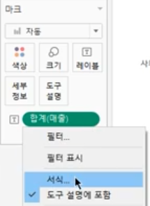
- 그 후 아래와 같이 수행
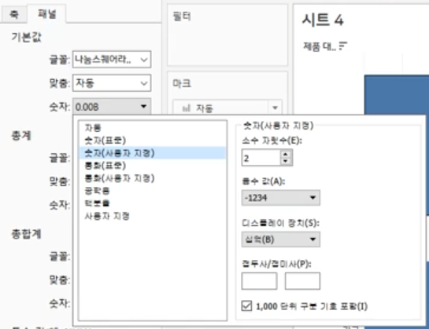
- 결과
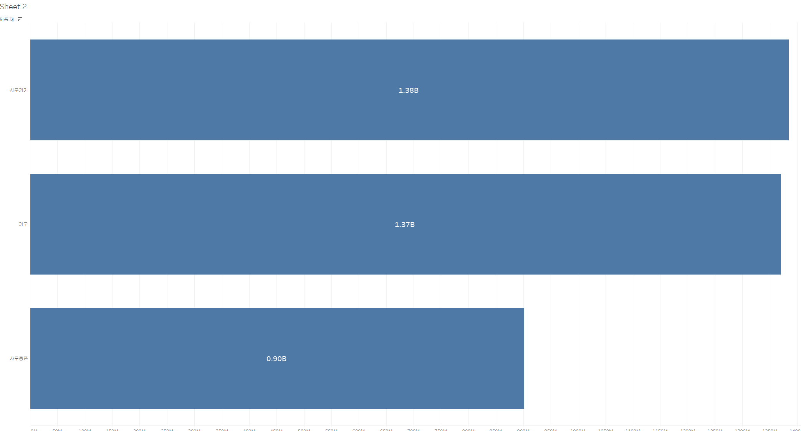
example 2
- 매출액을 제품 중분류에 따라 분류 후 평균 미만과 이상으로 색상 분류
step 1
- 계산된 필드 만들기
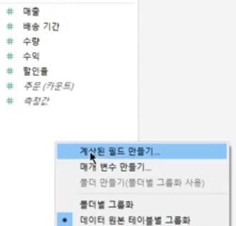
step 2
- 함수 입력
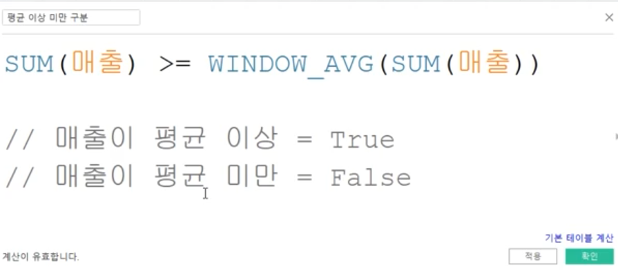
step 3
- 색상 마크에 드래그엔 드랍 후 결과 확인
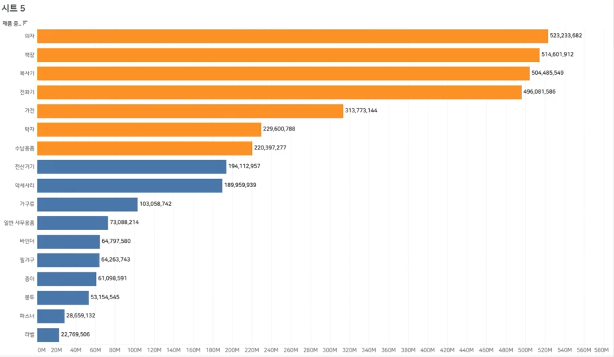
step 4
- 평균라인 추가
분석 패널에서 평균라인 클릭
시트로 가져와 테이블 참조선에 드래그
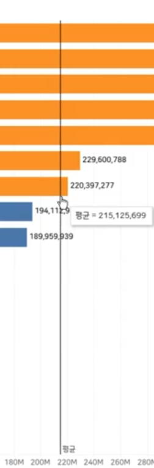
4. 태블로 기본 컨셉 2
- 불연속형 : 파란색 필드
- 초록색 : 연속형 필드
(1) 날짜 데이터
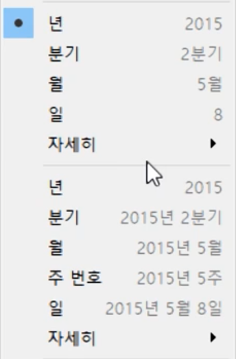
- 회색선을 기준으로 위는 불연속, 아래는 연속형 필드로 취급한다.
- 불연속형의 경우 산출되는 그래프
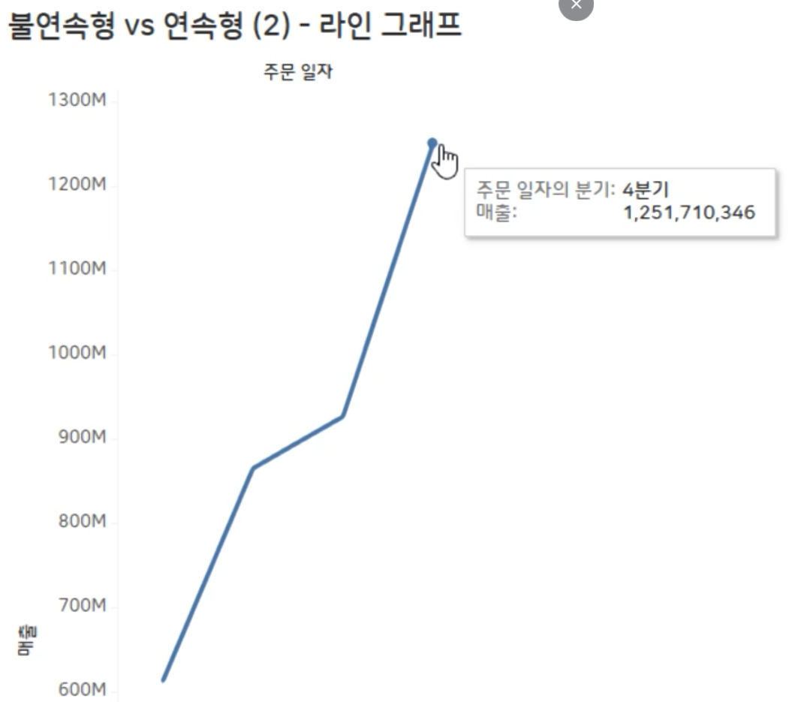
- 위의 4분기는 2015 ~ 2019년의 4분기가 모두 포함된 것이다.
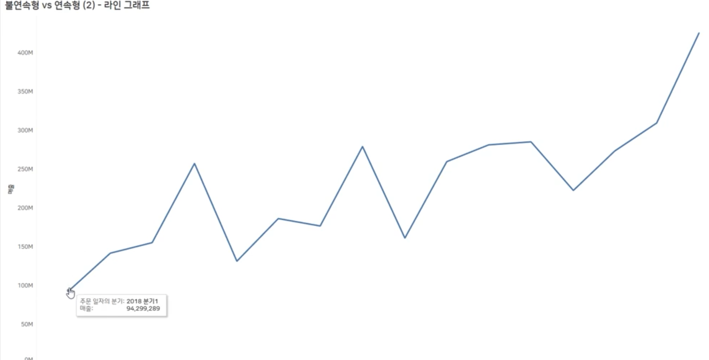
왜 차이가 나는지.,,,?
- 불연속형의 경우 DATEPART('quarter', [주문 일자])
- 위 함수는 날짜 형식을 숫자 타입으로 전환해 주는 함수이다. \(\to\) 즉 1,2,3,4 분기로 산출됨
- 연속형의 경우 DATETRUNC('quarter', [주문 일자])
- 2018년 1분기의 경우 1월 1일 부터 3월 31일까지의 모든 데이터를 표시한 것이다.
년,월 데이터 살피기
레이블 마커 조절 1
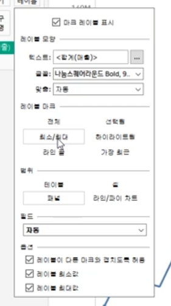
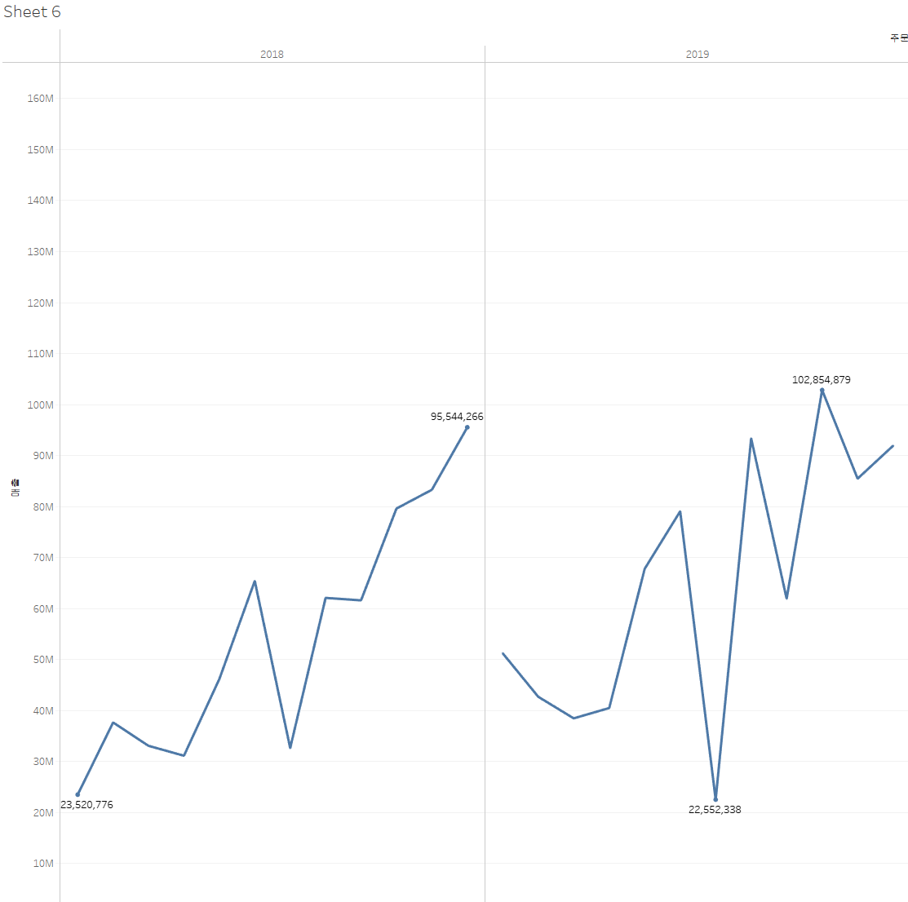
레이블 마커 조절 2
- step1 : 마커에서 레이블 옵션 중 하이라이트 선택
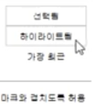
- step2 : 하이라이트 표시 선택
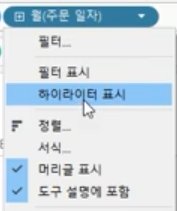
- 결과 확인
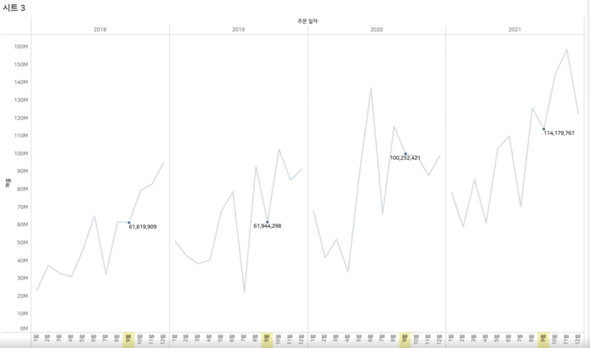
평균 라인 추가
- 연도별 평균
step 1. 분석 패널에서 평균라인을 panel로 드래그
step 2. 평균 라인 우클릭 후 편집창에서 다음과 같이 편집
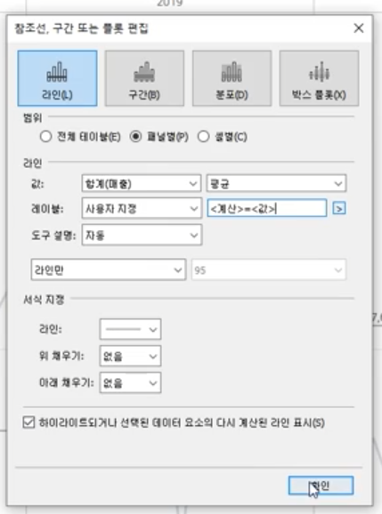
<계산> = <값> \(\to\) <Computation> = <Value>
step 3. 결과확인
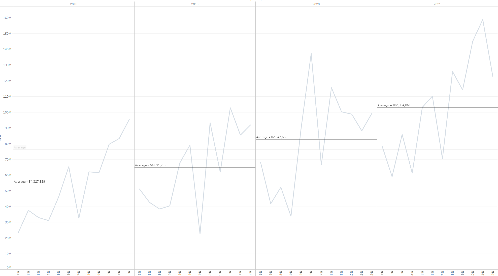
Summary
- 파란색필드 = 불연속형 = 개별적(패널)으로 구분
- 뷰에 추가하면 머리글을 표시
- 초록색필드 = 연속형
- 뷰에 추가하면 축을 추가한다.
Quiz
(1) 데이터 리터러시와 가장 관련이 없는 키워드는 무엇일까요?
협업 (Collaboration)
탐색 (Explore)
보기 (See)
공유 (Share)
대화 (Communication)
정답 : 보기
(2) 다음 중 태블로가 지닌 장점과 거리가 먼 것은?
끌어다 놓기 (Drag & Drop)만으로 시각화 가능
데이터 원본이 없는 사람은 어떤 경우에도 태블로 워크북을 오픈할 수 없어 보안에 강함
다양한 시각적 표현 가능
데이터 원본에 없는 필드 생성
모바일 디바이스에 맞게 제작해서 이동중에도 KPI를 살펴볼 수 있음
정답 : 데이터 원본이 없는 사람은 어떤 경우에도 태블로 워크북을 오픈할 수 없어 보안에 강함
(3) 다음 중 완전 무료 완전 공개 형태로 전 세계 태블로 유저들이 만든 Viz를 누구나 볼 수 있는 태블로 제품은 무엇인가요?
태블로 프렙
태블로 서버
태블로 데스크탑
태블로 뷰어
태블로 퍼블릭
정답 : 테블로 퍼블릭
(4) 다음 중 측정값에 대한 설명 중 틀린 것을 고르시오
차트를 나누어서 보는 기준
액션 (더블클릭 또는 드래그앤드롭)에 따라 한 덩어리로 만들어짐
기본 속성의 집계 설정 가능
일반적으로 숫자 형식
정답 : 차트를 나누어서 보는 기준
(5) 다음 중 태블로에서 기본적으로 측정값에 배치되는 필드 예시를 고르시오
지역명
구매 날짜
시험 점수
사람 이름
그룹
정답 : 시험 점수
(6) 막대 차트가 많이 활용되는 이유를 모두 고르시오
- 항목별로 나누어서 보는데 적합함
- 더블 클릭으로 쉽게 만들 수 있음
- 순위를 보는데 유용함
- 크기를 다르게 설정해서 살펴보는데 적합함
정답 : 항목별로 나누어서 보는데 적합함, 더블 클릭으로 쉽게 만들 수 있음, 순위를 보는데 유용함
(7) 다음 중 불연속형 속성에 대한 것을 모두 고르시오
단절이 없고 범위가 무한대로 이어짐
색상 마크에 올리면 그라데이션 다중색이 반영됨
뷰에 추가하면 머리글이 생성됨
필드 색상은 파란색
정답 : 필드 색상은 파란색, 뷰에 추가하면 머리글이 생성됨
(8) 다음 중 연속형 속성에 대한 것을 모두 고르시오
필드 색상은 초록색임
날짜 타입의 필드의 기본 함수가 DATETRUNC임
날짜 타입의 필드의 기본 함수가 DATEPART임
연속형 분기는 1,2,3,4 분기 4가지가 전부임
뷰에 추가하면 축을 가져옴
정답 : 필드 색상은 초록색임, 날짜 타입의 필드의 기본 함수가 DATETRUNC임, 뷰에 추가하면 축을 가져옴
(9) 다음 중 라인 차트에 대한 설명으로 알맞은 것을 고르시오
맵 차트와 이중 축으로 표현할 때 유용함
날짜 타입에 따라 불연속형과 연속형 형태로 설정이 가능함
부분 전체 분석에 유용함
날짜 타입의 필드를 맨 처음 더블 클릭하면 행 선반에 배치됨
정답 : 부분 전체 분석에 유용함
(10) 다음 중 평균 라인을 불러올 수 있는 곳을 고르시오
데이터 패널
분석 패널
맵 메뉴
데이터 원본 페이지
정답 : 분석 패널